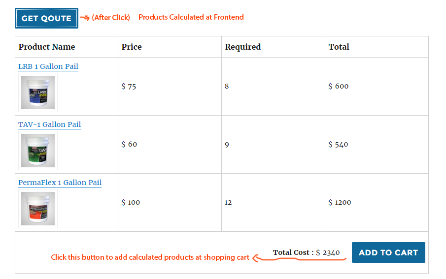

This section shows all available qoutes.
1.1 Quote Name
This is the name/title of a particular quote. When creating a new quote , this field was a required field. This field identifies quotes to user.1.2 Shortcode
To insert any quote form into a post/page/widget just write the shortcode in it. Quote form can also be inserted in sidebar using the same shortcode. for example[wooqco id="1"]
1.3 Action:Edit
Click here to edit a quote. Edit screen is exactly similar of creating a new quote1.4 Action:Export
Click here to export a particular quote form. You will be redirected to the export tab (3.1) with the download link of your exported CSV file. You can import this quote to any installation of this plugin using the import tab (4.1)1.5 Action:Delete
Click to delete that quote. A confirmation for delete is required to perform this. Click yes to ensure you want to delete this quote.1.6 Navigation
you will see a simple navigation menu to see rest of quotes once you have more than 12 quotes.This section creates new quote form.
2.1 Field Box
A fieldbox contains two fields. Label and options. See below image to see both at frontend2.1(A) Label
Label is the title of each field.2.1(B) Options
These are are the options.User will select the value from here. These can be text or number. To use these values in the calculation formula these must be numbers or must store & return a number value. It is possible to store a hidden value in each of the options within parenthesis(), which can be used at formula. For example "Demo Option (100 )" will show the option as "Demo Option". But when user select this option the value "100" will be returned, which can be used in the calculation formula as a variable.2.2 Products
These you will see all woocommerce products listed. You can select the products you want to show as result in this quote. Number of products can be calculated using formula (2.3) , base on user input fields (2.1)Set Product Order
You can simply drag and drop selected product order. Products order selected at the backend will be saved. At frontend quote products will be showed following that order.2.3 Formula
After saving a quote , you can use this section to save your formula for each product result. As stated above, you can use user selected value as variable and create formula to calculate number of product to show for each products. At front end the variable name will be replaced with the user selected values.2.4 Save
Click Save button to save/update a quote. You cannot leave a quote without any product selected or without field.3.1 Export All Quotes at One Click
Export a Single Quote
See 1.4 for this.4.1 Import Quotes
Choose the CSV file you want to import ( Export see 3.1 ) at file select box . You will see a confirmation message after the import is complete.Imported quotes can be seen at the Woo Quotes 1.1 section from menu.
Quote at Frontend
You will be automatically redirected to shopping cart after clicking "add to cart" button
Php API for Developers
WooQcoModel::WooQcoGetValue($property, $quoteID) [ Retrieve any property of a particular quote providing its id ]
Explanation
WooQcoModel - > The class name containing the core functions of the plugin.WooQcoGetValue - > The function name which retrieve plugin data from database. It has following two argument and returns an array of data.
$property -> Such as "options","labels","products","formula"
$quoteID -> Such as "1","l0","6" , found inside shortcode
Example :
WooQcoModel::WooQcoGetValue('labels', 1) Get labels of the quote which has id = 1WooQcoModel::WooQcoGetValue('options', 3) Get options of the quote which has id = 3WooQcoModel::WooQcoGetValue('products', 1) Get products of the quote which has id = 1WooQcoModel::WooQcoGetValue('formula', 82) Get formula of the quote which has id = 82Working Example :
/******Show all labels of Quote have id = 1**********/
$labels = WooQcoModel::WooQcoGetValue('labels', 1);
foreach($labels as label){
echo $label ."
";
}
/******Show all options of Quote have id = 1**********/
$options = WooQcoModel::WooQcoGetValue('options', 1);
for($optionNumber = 1; $optionNumber<=count($options); $optionNumber++){
echo "Values of Option $optionNumber";
$optionArray = explode("\n", $options['options'.$optionNumber]);
for($option=0;$option
";
}
echo "
";
}